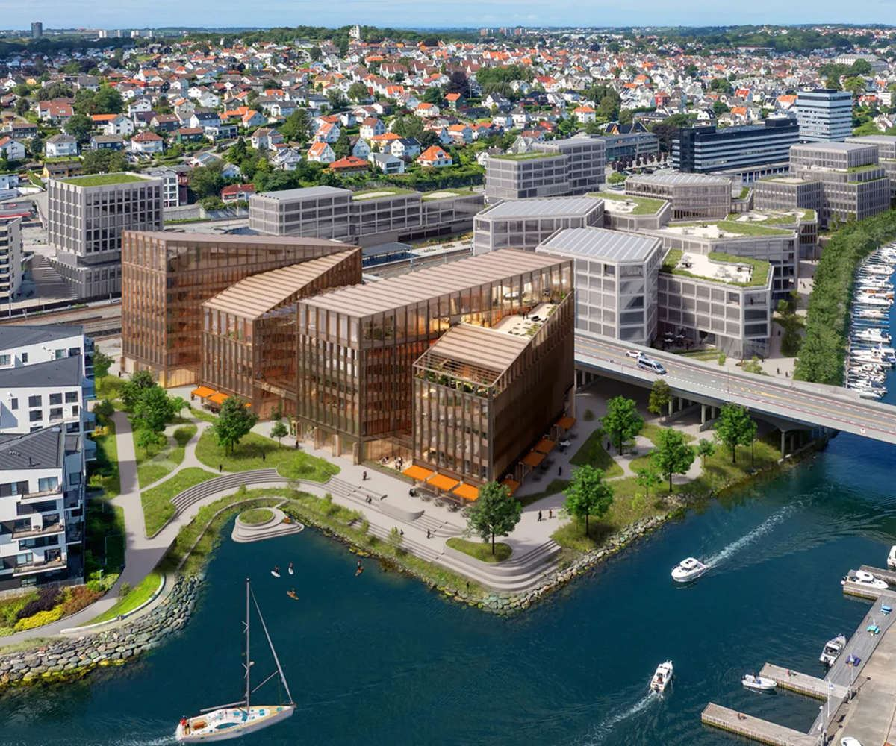
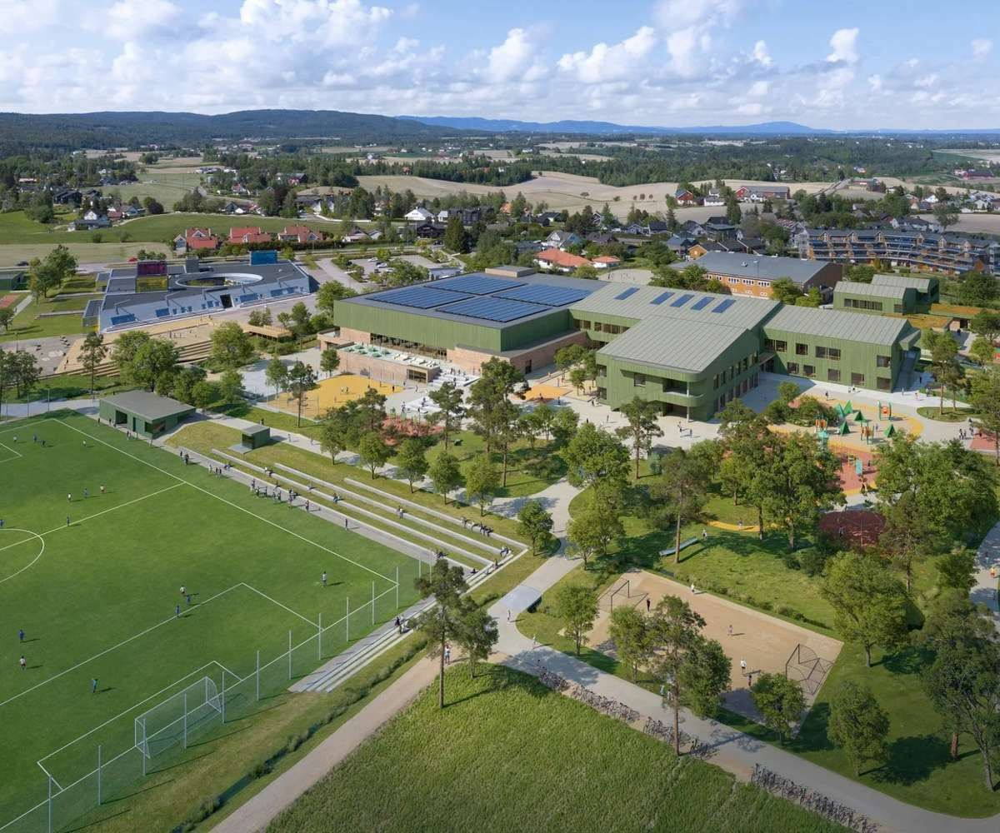
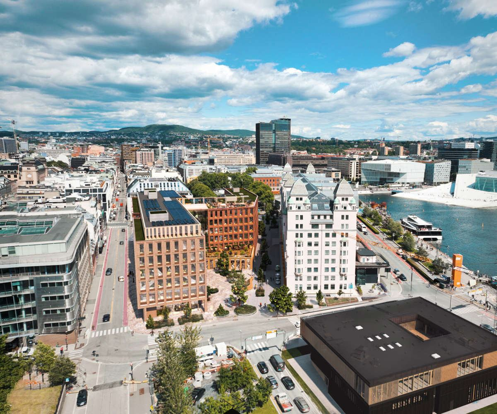
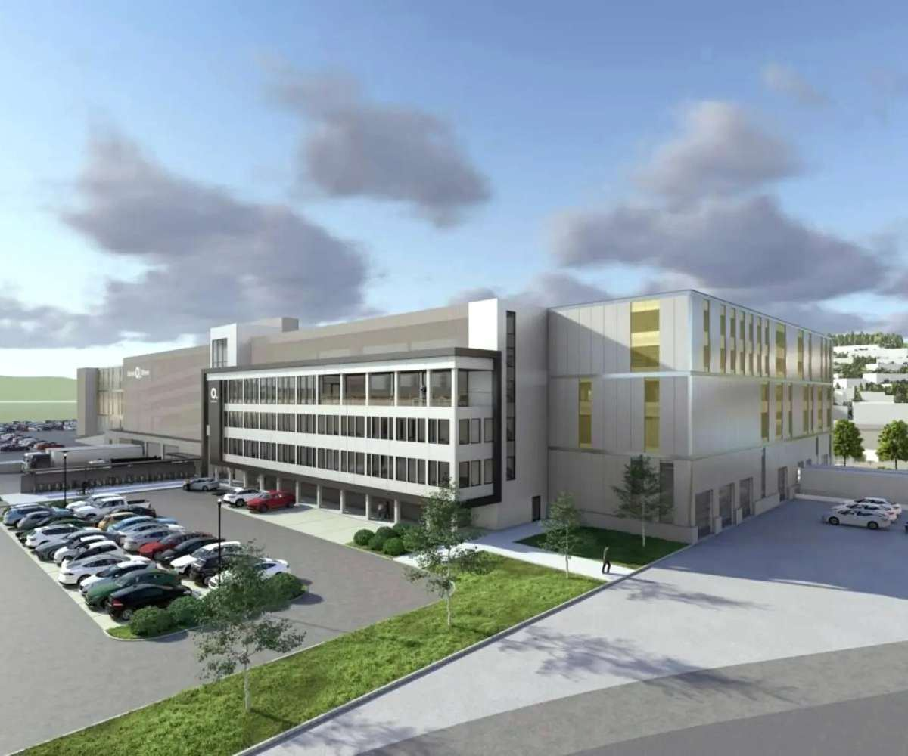
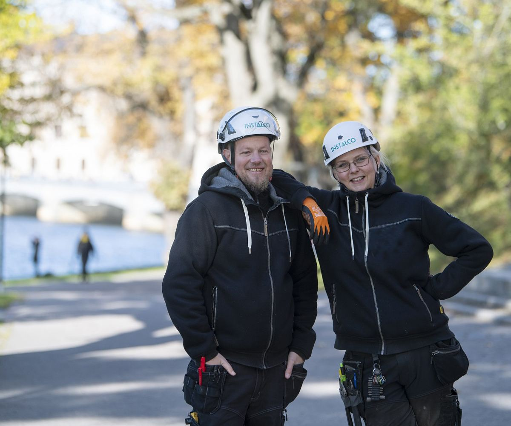

Autorisert el-installasjonsbedrift · Oslo
Strøm som virker.
Montert riktig.
AS Elektrisk prosjekterer, installerer og vedlikeholder elektriske anlegg for næring og offentlig sektor i Oslo-området. Siden 1983. Med egne folk, egne biler og dokumentasjonen i orden.
Fem ting vi gjør hver dag
Fra en enkelt kurs i et kontorbygg til komplette installasjoner med styring, dokumentasjon og serviceavtale.
Installasjon og vedlikehold
Nyinstallasjon, utskifting og vedlikehold av sterk- og svakstrømsanlegg.
→02Prosjekter
Elektroentreprenør i byggeprosjekter, med koordinering mot andre fag.
→03Styresystemer og KNX
Programmering og idriftsettelse av lys, varme og solavskjerming.
→04Internkontroll og termografering
Termografering, dokumentert internkontroll og rapportering.
→05Servicekontrakter
Faste avtaler med responstid, silk at anlegget ikke blir stående.
→Dokumentert, ikke bare påstått
Internkontroll er ikke et skjema vi fyller ut til slutt. Det er dokumentasjonen som ligger klar når anlegget overleveres.
Termografering
Vi fotograferer tavler og koblinger under last, finner varmgangen og dokumenterer før og etter.
Måling og verifikasjon
Isolasjonsmåling, jordfeilmåling og kontroll av vern dokumenteres per kurs.
Samsvarserklæring
Anlegget skal ikke bare virke. Det skal være erkært i samsvar med regelverket ved overlevering.
HMS på byggeplass
Ryddede arbeidsområder, sikrede kurser og egne rutiner for arbeid med spenning.
Anlegg du kan gå inn i
Referanseprosjekter i Oslo-området – kontorbygg, idrettsanlegg, næringsbygg og helsehus.

Hieronymus Heyerdahls gate 1
Elektro i nytt kontorbygg i Oslo sentrum, med styring og dokumentasjon per etasje.

Langhusbadet
Strøm og styring i et teknisk krevende svømmeanlegg med høy luftfuktighet.

Lakkegata 23
Installasjon i næringsbygg med eksisterende drift i lokalene ved siden av.

Hurum Helsehus
Anlegg for helsebygg, der driftssikkerhet og dokumentasjon er like viktig som pris.
Folk som svarer på telefon
Vi er et lokalt selskap i et stort konsern. Det betyr korte beslutningsveier og ressurser når prosjektet er stort.

- Autorisert el-installasjonsbedrift med faglærte elektrikere.
- Egne servicebiler med utstyr og materiell i Oslo.
- Dokumentasjon, målerapporter og samsvarserklæring ved overlevering.
- Servicekontrakter med avtalt responstid.
- Del av Instalco med over 7 000 medarbeidere i fire land.
Har du et anlegg som skal bygges, oppgraderes eller kontrolleres?
Send oss en kort beskrivelse og eventuelle tegninger, så ser vi på det. Vi gir tilbud på både små jobber og større prosjekter.